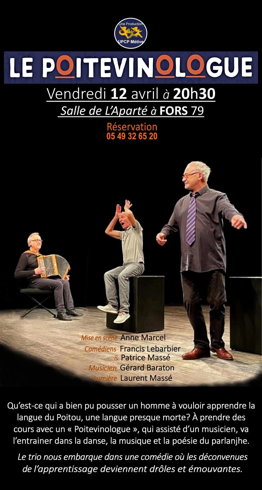

Annonce culturelle
Le Poitevinologue annoncé le 12 avril
Date indiquée par Facebook · 7 avril 2024
Repères éditoriaux
L’affiche conservée annonce une représentation du Poitevinologue le vendredi 12 avril à 20 h 30.
Texte conservé avec la publication
Quand le 21ème siècle fut venu, qu’est-ce qui a bien pu pousser un homme à vouloir apprendre la langue du Poitou, le parlanjhe, une langue presque morte ?
Voyage intime en parlanjhe Vendredi 12 avril à Fors
Une comédie poétique où les déconvenues de l’apprentissage transportent le spectateur dans la légèreté d’un voyage presque initiatique !

Sources
Archive rouge · export Facebook · AR-0002-FB-01428
À lire aussi · Pass culture, non à la punition collective ! · Le lien d’origine